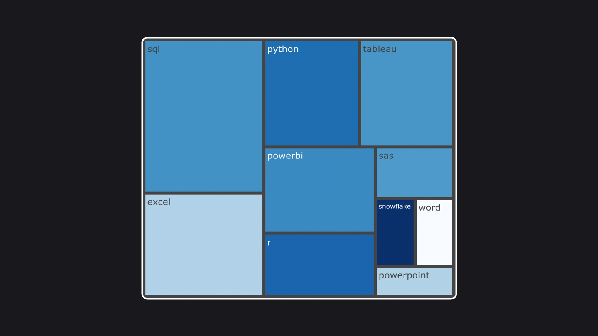

How to get noticed by a famous youtuber/data analyst
Yes, it's kind of a clickbait.
There is a YouTube channel about data analytics with over 360K subscribers. This channel belongs to Luke Barousse. In one of his videos, he described a project which consisted of collecting a dataset of data analyst job postings, analyzing skills and salaries, and creating a web app where everybody can explore this data. A sample of the collected dataset was uploaded to Kaggle, and what makes it stand out, it stays relevant as it is updated daily.
After watching the video, I checked out the dataset and Luke Barousse's analysis. I've decided to explore the question of popularity vs salary for the top skills required for a data analyst position. So I created a python notebook with tiny data exploration and a simple treemap visualization. I uploaded this notebook to Kaggle, and it was commented on by Luke Barousse himself! And he said he liked my work! I know it may seem insignificant, but it was the first time my work got feedback from a professional in the field. As they say, 'you never forget your first'.
Anyway, this post isn't really about the comment. Its main purpose is to show that I love positive feedback (actually, any type of feedback is a treasure) and sometimes I do stuff on Kaggle. Here is my profile :)